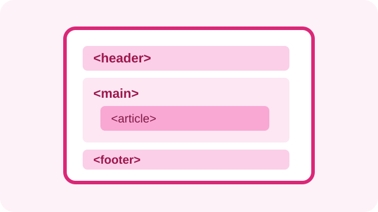

La importancia de usar etiquetas semánticas
Por el equipo de Conquer Blocks |

Cuando empezamos a hacer páginas web solemos poner todo dentro de div sin pensar mucho. Funciona, pero es mejor usar etiquetas que expliquen qué es cada parte de la página.
¿Por qué no usar solo div?
Si todo es un div, cuesta entender el código y también a los lectores de pantalla les cuesta moverse por la página. Con etiquetas como header, nav, main o footer se ve enseguida para qué sirve cada zona.
Ayuda con el SEO
Los buscadores leen los títulos y la estructura de la página para saber de qué trata. Si está bien organizada, lo tienen más fácil para entender cuál es la información importante.